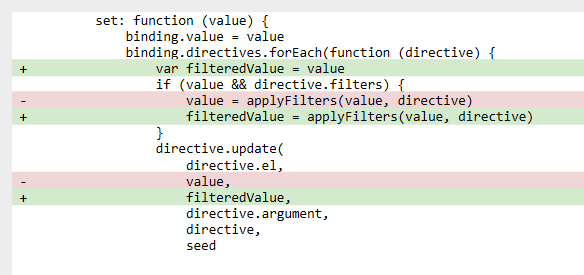
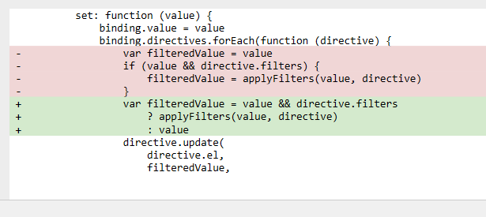

1.init commit 83fac01
简单分析：项目grunt 集成方案，使用componentJs框架。
注意：此处componentJs使用的版本为0.16.3,也就是需要执行npm install -g component@0.16.3.
另外简单介绍component.js，只需要执行component install,然后运行component build命令即可，具体可参考github,当然该项目使用了grunt-component-build，可以直接运行 grunt component_build。
2.rename 871ed91
项目rename了生成的文件为seed.js,添加了文件夹exporations。该文件夹下有两个文件，分别为getset.html与getset-revits-style.html。
其中，getset.html内容如下：
上面script中定义的Element方法就是简单的render方法，通过选取元素，然后使用replace方法将initData中的数据替换选中的元素。
3.native implementation commit a5e27b1
1.src目录下有3个文件一次为filter，directive，main。其中，filter.js定义了简单的首字符大写capitalize过滤器。
directive定义了'sd-text','sd-show','sd-class','sd-on'指令。
12345678910111213141516171819202122232425262728293031323334353637383940
module.exports = { text: function (el, value) { el.textContent = value || '' }, show: function (el, value) { el.style.display = value ? '' : 'none' }, class: function (el, value, classname) { el.classList[value ? 'add' : 'remove'](classname) }, on: { update: function (el, handler, event, directive) { if (!directive.handlers) { directive.handlers = {} } var handlers = directive.handlers if (handlers[event]) { el.removeEventListener(event, handlers[event]) } if (handler) { handler = handler.bind(el) el.addEventListener(event, handler) handlers[event] = handler } }, unbind: function (el, event, directive) { if (directive.handlers) { el.removeEventListener(event, directive.handlers[event]) } }, customFilter: function (handler, selectors) { return function (e) { var match = selectors.every(function (selector) { return e.target.webkitMatchesSelector(selector) }) if (match) handler.apply(this, arguments) } } }}
main.js文件是核心文件，定义了Seed构造器，以及相关的辅助函数。
|
|
通过分析Seed构造函数，原理是通过遍历目标元素的子元素中含有[‘sd-text’][‘sd-show’][‘sd-on’][‘sd-class’]属性的元素。通过processNode方法，对选中的每个子元素上，首先将sd属性转化为对应的directive指令，然后在目标元素上添加el子元素的对应的directive。并且在bindAccessors中为seed目标元素定义对应scope的key属性的set，get方法，这里其实是核心。当初始化时，调用了该方法。
在dev.html中，使用了seed.js进行了测试。
可以通过调试，很容易的分析Seed.js的运行过程。很明显的看到，这里有很多处不足的地方，首先，Seed.js选中的根元素只能是通过id选择，其次，选择子元素中具有sd相关属性，也有不足，例如，只有sd-on-click，将不能被root.querySeletorAll([‘sd-on’]),匹配到，但是，这里已经可以有了雏形。
4.filer value should not be written commit 3eb7f6f
这次commit主要修复了一个问题，filterValue显示，但是并不更改binding的value值。主要为在bindAccessor方法中，如下改变：

同时，在directives中添加了repeat指令，但是并没有具体实现。在main.js的Seed构造器中，为Seed原型添加了dump方法以及生命周期的destory方法，进行销毁对象。
在dev.html测试中，测试了app的destory。
5.dump,destory,fix filters commit ec39439
主要在main.js修复了if判断，改为了三元式。

另外在filters中添加了uppercase过滤器，并在dev.html进行了验证。
6.refactor项目重构 commit cf1732b
将directive单独提取出来，并且将main.js中的Seed.js进行了重构，filter.js主要增加了delegate委托过滤器。